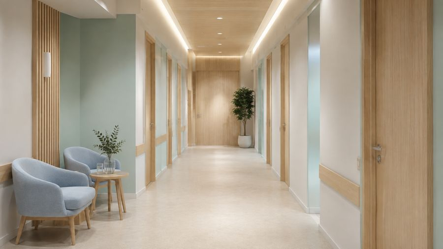

Психиатрия
Диагностика и лечение у взрослых, детей и подростков
39 состояний и услугПроверьте написание или спросите администратора — он подскажет, к какому врачу обратиться.
Частная клиника · Москва
Бережно разберёмся в состоянии и подберём лечение. Анонимно, без постановки на учёт.
Первичная консультация — от 3 500 ₽, 60 минут
Рейтинги на независимых площадках
Направления
Психика — такая же часть здоровья, как сердце
От первичной диагностики до долгого сопровождения — подбираем формат, который подходит именно вам.
Карта состояний
Не знаете, какой специалист нужен?
Опишите ситуацию — администратор подберёт врача и удобное время. Это бесплатно и анонимно.
Шесть направлений
Все направленияДиагностика и лечение у взрослых, детей и подростков
39 состояний и услугПодбор терапии и долгосрочное наблюдение
10 расстройствРазговорные методы — с лекарствами или без
11 состоянийВзрослым, детям и семьям: самооценка, отношения, утрата
17 услугПамять, настроение и поведение, поддержка семьи
6 состояний и услугДетский психиатр и невролог — вместе с родителями
3 услугиПервый приём
Без очередей и спешки. Заранее понятно, что будет и сколько это стоит.
Первичный приём и диагноз — только очно: в клинике или на дому.
Позвоните, напишите или оставьте заявку. Перезвоним за 15 минут, подберём врача и время.
60 минут без спешки: врач расспросит о самочувствии, сне, настроении и о том, что беспокоит.
Объясним, что происходит, и предложим понятный план. Лекарства — только когда без них не обойтись.
Остаёмся на связи между визитами. Повторные консультации можно проходить онлайн.
Врачи
Психиатры, психотерапевты и психологи со стажем от 9 лет подберут формат помощи под ваш запрос.

Главный врачСтаж 18 лет
Стаж 14 летОнлайн — повторно

Стаж 11 лет

Стаж 16 летДети и подростки

Стаж 9 летОнлайн — повторно
Подбор врача
Опишите ситуацию — администратор подберёт врача и удобное время.
Цены и форматы
Стоимость видна до записи. Первичный приём — очно, в клинике или на дому, повторные можно онлайн.
Первичный приём с постановкой диагноза по закону проходит очно — в клинике или на дому (323‑ФЗ). Повторные консультации и наблюдение — по видеосвязи.
Прайс
Не знаете, к какому врачу записаться? Администратор подскажет: +7 495 000-00-00
Цены носят информационный характер и не являются публичной офертой.
Отзывы и рейтинги
Оценки клиники на независимых площадках. Отзывы публикуем только с согласия пациентов, имена сокращены ради конфиденциальности.
средняя оценка
504 отзыва на 6 площадках
001 · Яндекс Карты
002 · ПроДокторов
003 · НаПоправку
004 · Google
005 · 2ГИС
006 · Yell.ru
Отрывки, полные тексты — по ссылкам выше
Яндекс Картысентябрь 2026
Долго откладывала визит к психиатру — казалось, что это страшно.
Марина, 34 годаПриём у А. В. Соколовой
ПроДокторовавгуст 2026
Сына направили к детскому психиатру после сложностей в школе.
Дмитрий, 41 годПриём у И. П. Лебедева
2ГИСоктябрь 2026
Врач подробно объяснил схему терапии и был на связи между визитами.
Елена, 29 летПовторный приём онлайн
О клинике
«Ментея» — команда психиатров, психотерапевтов и клинических психологов.
Мы лечим не диагноз, а человека: смотрим на сон, тело, отношения и историю.

Слово главного врача
«Обращение за психиатрической помощью — не признак слабости, а осознанный шаг к устойчивости и качеству жизни».
Мы открыли клинику, чтобы обращение к психиатру перестало быть поводом для тревоги: здесь нет очередей, осуждающих взглядов и казённых кабинетов. Совмещаем лекарства и психотерапию, объясняем, что и зачем назначаем.
Соколова Анна ВикторовнаГлавный врач, психиатр, к. м. н.
Цифры — по данным клиники на 1 октября 2026 года.
Лицензии
Лицензия на медицинскую деятельность, включая психиатрию и психотерапию. Номер можно проверить в открытом реестре Росздравнадзора.
Документ 01 · Лицензия
Дипломы, действующая аккредитация и регулярное повышение квалификации
Сведения о пациентах не разглашаются — ст. 13 закона № 323‑ФЗ
Лечим по протоколам, утверждённым Минздравом России
При записи через сайт первичная консультация психиатра или психотерапевта — со скидкой 20%.
Обычная цена: от 3 500 ₽По акции: от 2 800 ₽
При оформлении программы наблюдения от 3 месяцев — психологическая диагностика бесплатно.
Обычная цена: от 4 000 ₽По акции: Бесплатно
Специальная цена на консультации психолога для студентов очной формы обучения — по студенческому билету.
Обычная цена: от 2 500 ₽Для студентов: Спеццена
Имеются противопоказания. Необходима консультация специалиста
Вопросы и ответы
Собрали то, о чём чаще всего спрашивают.
Нет, направление не требуется. Записаться можно напрямую — по телефону, через сайт или мессенджер.
Нет. «Ментея» — частная клиника, приём анонимный и не влечёт постановку на учёт в ПНД.
Да. Сведения о факте обращения и лечении не передаются третьим лицам, работодателю или в госучреждения без вашего согласия.
Повторные консультации и наблюдение — да, по видеосвязи. Первичный приём с постановкой диагноза по закону проходит очно — в клинике или на дому.
Специальной подготовки не нужно. Возьмите результаты прошлых обследований и список лекарств, если они есть.
Да. На первую консультацию можно прийти без пациента: врач расскажет, как поддержать близкого и предложить ему помощь. Осмотр проводится только с согласия пациента, кроме случаев, предусмотренных законом о психиатрической помощи.
Да, принимают детские и подростковые специалисты. Приём несовершеннолетних — в присутствии родителя или законного представителя.
Наличными или картой. Выдаём кассовый чек, по запросу — справку для налогового вычета.
Не нашли ответ? Напишите — ответим анонимно
Администратор ответит за 15 минут в рабочее время. Бесплатно.
Срочно нужна помощь?
Позвоните — подберём ближайшее время или вызовем врача на дом. При угрозе жизни сразу звоните 112.
+7 495 000-00-00Запись и контакты
Ответим на вопросы, подберём врача и удобное время. Анонимно, без постановки на учёт.
Клиент: Здравствуйте. Хочу записаться к психиатру, но переживаю, что об этом узнают на работе.
Администратор: Здравствуйте! Приём анонимный: на учёт не ставим, сведения никому не передаём. Достаточно имени.
Клиент: А первый приём можно онлайн? Мне удобно в субботу вечером.
Администратор: Первый приём — очно, в клинике или у вас дома: так требует закон. Суббота подходит, мы работаем ежедневно до 21:00. Повторные встречи можно онлайн.
Администратор: Оставьте номер — перезвоню, подберу врача и время. Накануне напомним о приёме.
Телефон
Часы работы
Ежедневно 9:00–21:00
Приём ежедневно 9:00–21:00. Выезд психиатра на дом — круглосуточно